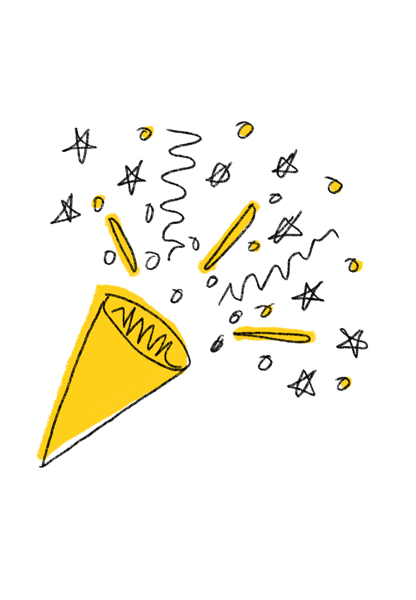

Grain test kitchen
If found, return to
at
grain.com.sg/missingrecipes

Chef Nic's been looking everywhere.
Which one did you find?

Thanks to you, this dish is making it to June's menu launch.
You've earned yourself a little something.
10% off catering, capped at $100
Valid for events in June and July.
Enter code at checkout. Not valid with ongoing promotions.